Examples¶
The example data files can be downloaded from the github project page
DNS case¶
This velocity field is from a DNS simulation of an Homogeneous Isotropic Turbulence (HIT) case.
Using default input file example_dataHIT.nc, default scheme least square filter and default detection swirling strength we test here two cases:
- Case 1: threshold on swirling strength = 0.0
- Case 2: threshold on swirling strength = 0.1
- Case 3: threshold on swirling strength = 0.2
- Case 4: threshold on swirling strength = 0.4
If you set self.normalization_flag = True on the classes.py module, the value of swirling strength will be normalized. The values of the threshold must be set to avoid unnecessary noise.
Case 1¶
$ vortexfitting -t 0.0 -i data/example_dataHIT.nc
361 vortices detected with 84 accepted.

{kind=link}
Case 3¶
$ vortexfitting -t 0.2 -i data/example_dataHIT.nc
{kind=link}
58 vortices detected with 40 accepted.
Case 4¶
$ vortexfitting -t 0.4 -i data/example_dataHIT.nc
{kind=link}
9 vortices detected with 8 accepted.
Below two vortices are displayed, where in the left we have the normal field and to the right we have the advection velocity subtracted.
 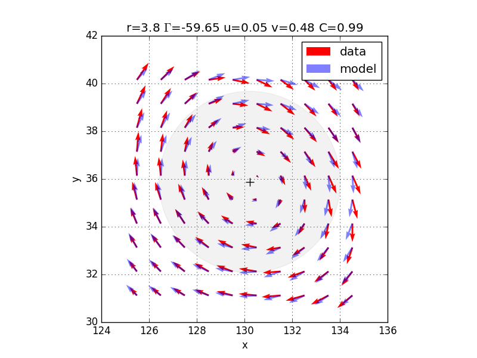
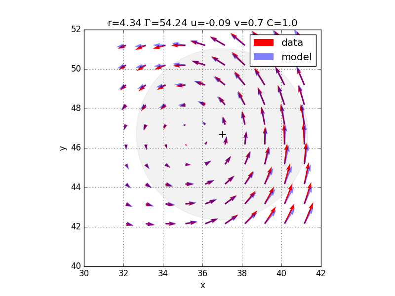
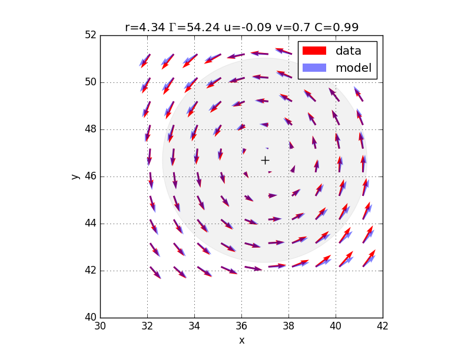
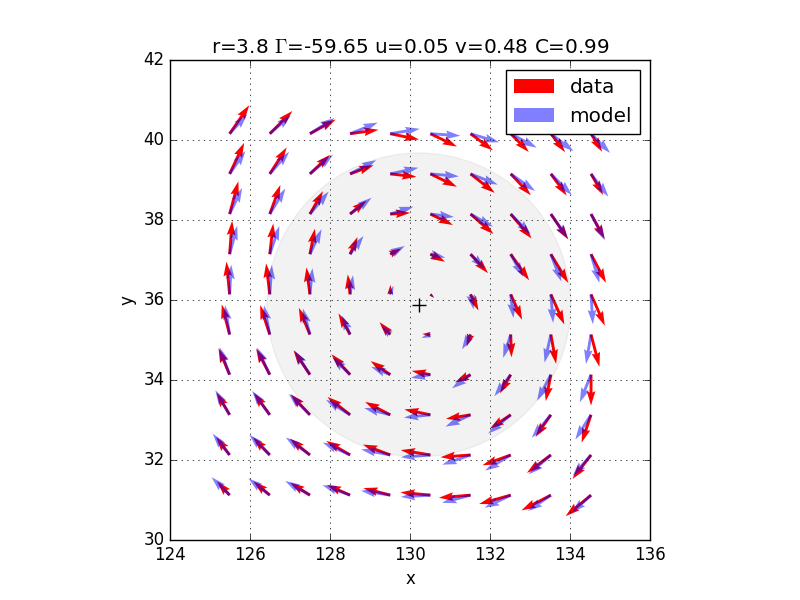
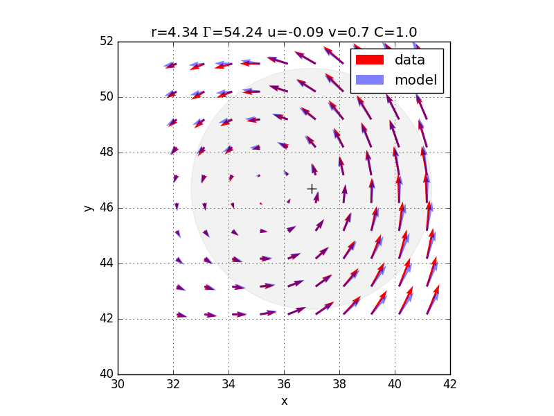
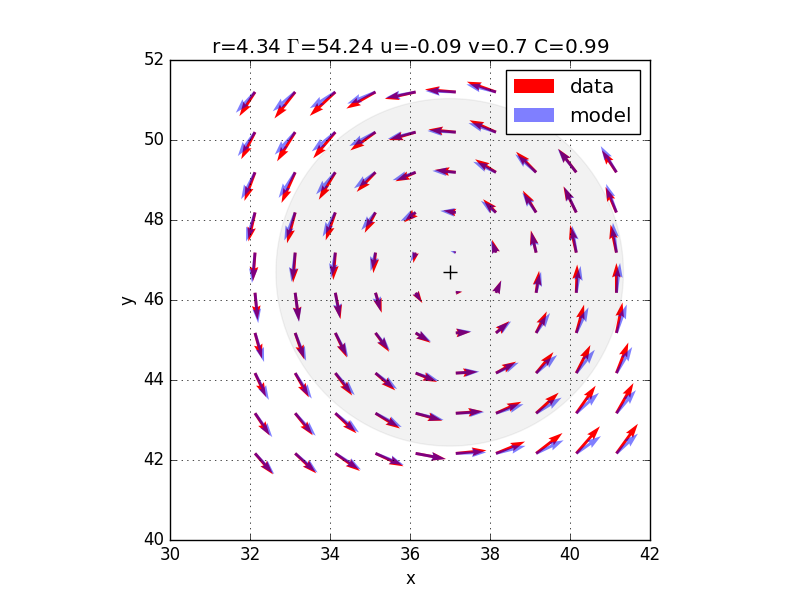
{kind=link}
{kind=link}
{kind=link}
| Case | Threshold | Detected | Accepted |
|---|---|---|---|
| 1 | 0.0 | 361 | 84 |
| 2 | 0.1 | 162 | 72 |
| 3 | 0.2 | 58 | 40 |
| 4 | 0.4 | 9 | 8 |
PIV case - NetCDF file¶
For PIV data we need to update the format, to match NetCDF file.
It is done with the -ft piv_netcdf (file type) argument.
Here, since we have an advection velocity, we have to set self.normalization_flag = True and self.normalization_direction = ‘y’. This is done directly in the classes.py module.
The -rmax argument leaves the software calculate the initial radius.
$ vortexfitting -i data/example_dataPIV.nc -ft piv_netcdf -t 1.5 -rmax 0
{kind=link}
203 vortices detected with 24 accepted.
Below two vortices are displayed, where in the left we have the normal field and to the right we have the advection velocity subtracted.
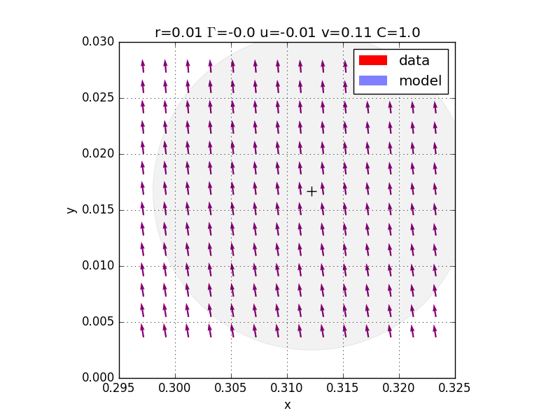 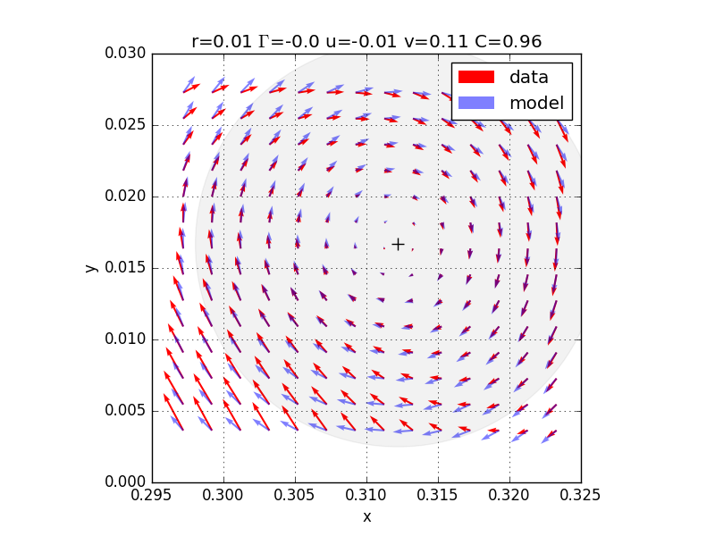 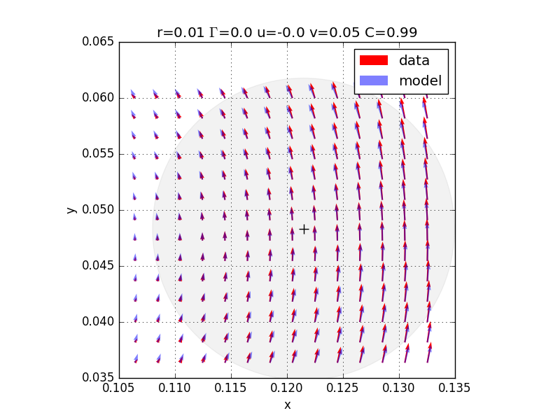{kind=link}
{kind=link}
{kind=link}

PIV case - Tecplot file¶
For PIV data with Tecplot, we need to update the format, to match Tecplot file.
It is done with the -ft piv_tecplot (file type) argument.
$ vortexfitting.py data/adim_vel_{:06d}.dat -first 10 -t 5 -b 10 -ft piv_tecplot
{kind=link}
An average field can be subtracted, using -mf argument (mean file)
If you want to analyze a set of images, use arguments -first, -last and -step.
(please modify data input to format the image number: dim_vel_{:06d}.dat with -first 10 is formatted as dim_vel_000010.dat).
$ vortexfitting.py -i data/dim_vel_{:06d}.dat -mf data/mean.dat -t 50 -first 10 -ft piv_tecplot
As presented in the image, one main vortex is found in the velocity field provided.
Numerical case - OpenFOAM file¶
A columnar Lamb-Oseen vortex is generated on OpenFOAM. By default, data are extracted in a text file, with a .raw extension.
Here, a z-plane is extracted, with a 100x100 mesh. 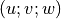 data are exported.
The spatial mesh for this simulation is quite small, so the default initial radius (rmax = 10) is too large.
Specify a smaller value (close to the spatial mesh); -rmax 0 gets an initial radius of 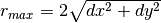,
with 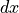 and 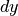 the spatial resolution.
$ vortexfitting.py -i data/example_Ub_planeZ_0.01.raw -ft openfoam -rmax 0.0
 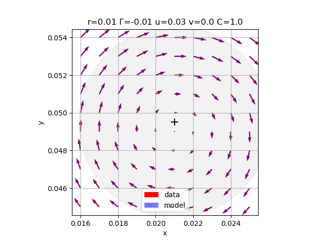
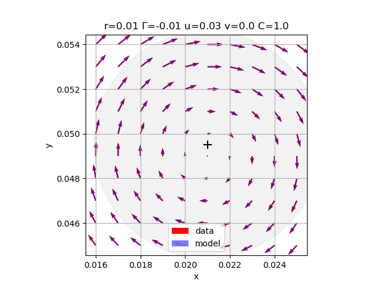
{kind=link}